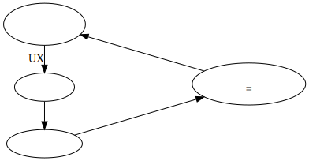
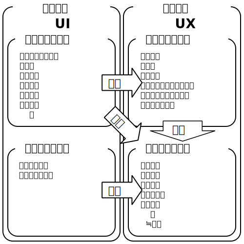
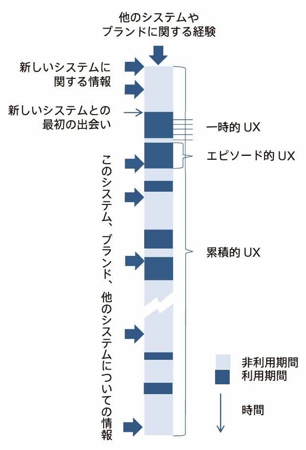
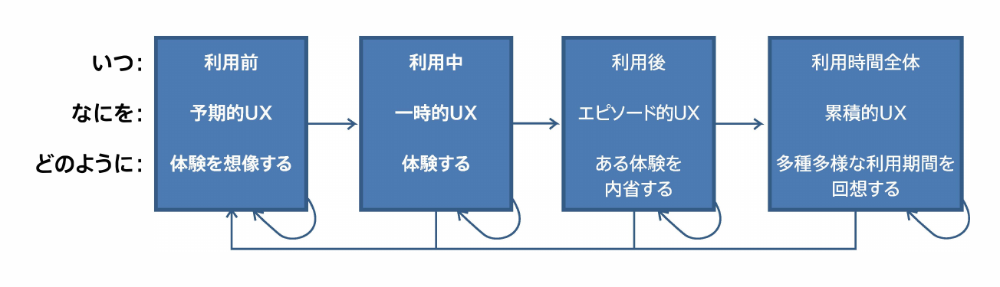
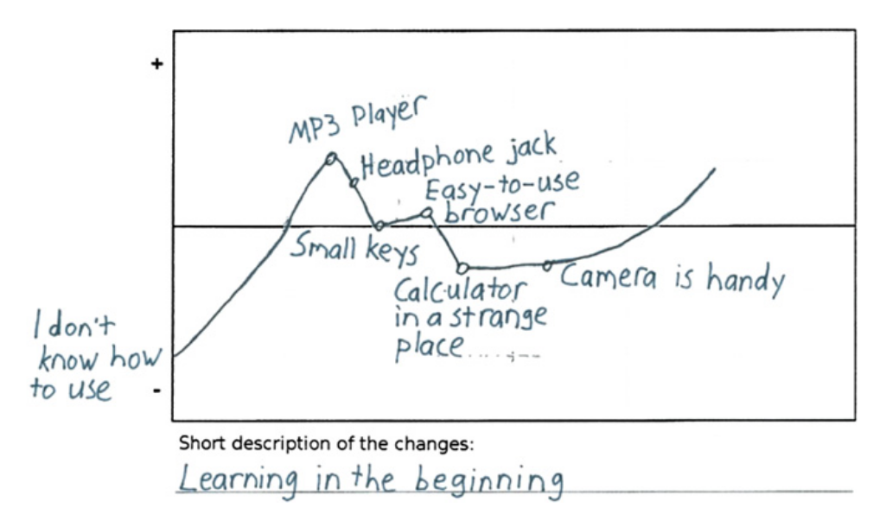

クチコミの例
喜んでくれました
父の誕生日プレゼントに購入しましたが、使いやすいと好評です。
カラーは赤を選びましたが光沢感があり綺麗です。説明書を読まなくても使い方が分かる程度には機能
がシンプル…
UXカーブを用いた
クチコミ支援ソフトウェアの実装
情報コース
久野公瑛
研究テーマの補足
元来のクチコミ
うわさ・評判などを口伝えに広めること。
[補説]マスコミをもじった語。
1960年代の初めに使われだした。
本研究におけるクチコミ
オンラインでの商品（製品・サービス）に関するクチコミを指す
クチコミの例
喜んでくれました
父の誕生日プレゼントに購入しましたが、使いやすいと好評です。
カラーは赤を選びましたが光沢感があり綺麗です。説明書を読まなくても使い方が分かる程度には機能
がシンプル…
なぜクチコミの記述に支援が必要か

有用なクチコミを読めば
効率的に商品が評価できる
クチコミの有用性に関する分析
主観的な表現だけでは、
商品を評価することができない
クチコミで評価できる商品の要素とは？

客観的設計品質：
利用前から商品がもつ特性
客観的利用品質：
どんな風に利用して
どのような結果が得られたか
主観的利用品質：
1.と2.を通してどのように感じたか
≒主観的な表現
UXとは
参考：UX白書(日本語版)
商品を利用している
瞬間以外も
UXは形成されている

出典：UX白書(日本語版)
利用期間ごとに形成されるUXの性質は異なる

出典：UX白書(日本語版)
UXにおいて、エピソードが発生した
時間的順序と期間は重要
UXの評価手法においても同様
UXカーブとは
横軸に時間、縦軸に魅力、使いやすさなどの
度合いをペンで描くことでUXを評価する

参考・出典：UX Curve: A method for evaluating long-term user experience
UXカーブの特徴
UXカーブを応用してクチコミを記述すれば、
どんな風に利用してどのような結果が得られたか
分かるクチコミになる
類似したオンラインツールがある
実装したもの
UXグラフツールとの違い
埋め込み例